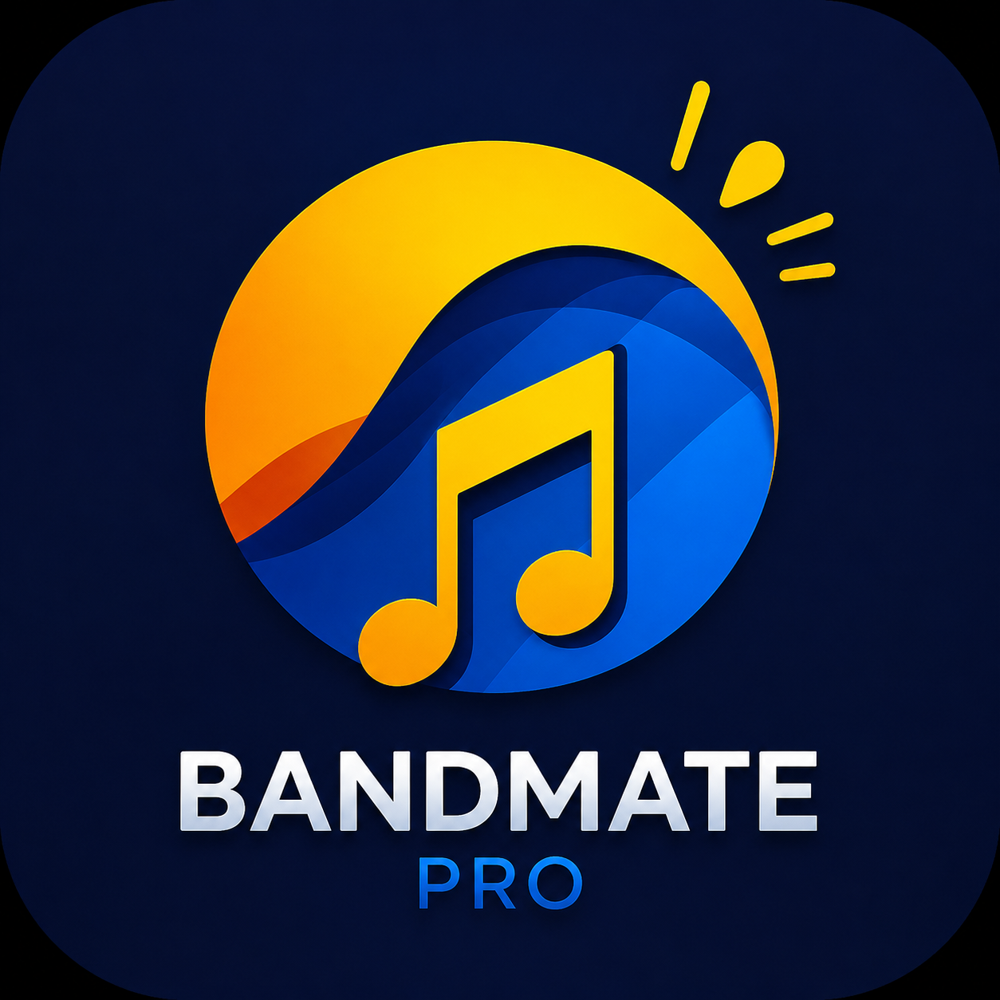

Interactive training platform designed to help musicians improve performance, discipline, confidence, leadership, and audition preparation.
Many students preparing for marching band auditions lack structured tools to improve technique, consistency, confidence, and mental preparation.
BandMate started as a personal challenge after seeing how demanding drum major auditions and music leadership preparation can be.
Although I did not originally come from a music background, I dedicated time to learning how band systems, conducting preparation, and performance development worked in order to build a meaningful solution.
This project represents my ability to adapt quickly, learn new industries, and create technology solutions even in areas outside my original experience.
BandMate is an interactive training platform designed to help musicians develop performance habits, improve technical skills, and prepare for competitive auditions through guided exercises and real-time feedback.
My vision is to create a platform that helps students grow both musically and mentally while giving them access to tools that make preparation more structured, accessible, and effective.
Launch Live App →Interactive metronome system designed to improve timing, rhythm accuracy, and consistency during practice sessions.
Real-time performance tracking system focused on helping users monitor improvement and training consistency.
Upload practice recordings and receive AI-assisted feedback focused on technique, timing, and overall performance improvement.
Structured exercises, leadership preparation, conducting practice, and interview simulations designed for drum major auditions.
Practice audition packets with guided exercises and preparation tools designed to improve performance before auditions.
Mental preparation exercises focused on discipline, confidence, consistency, and performance mindset development.